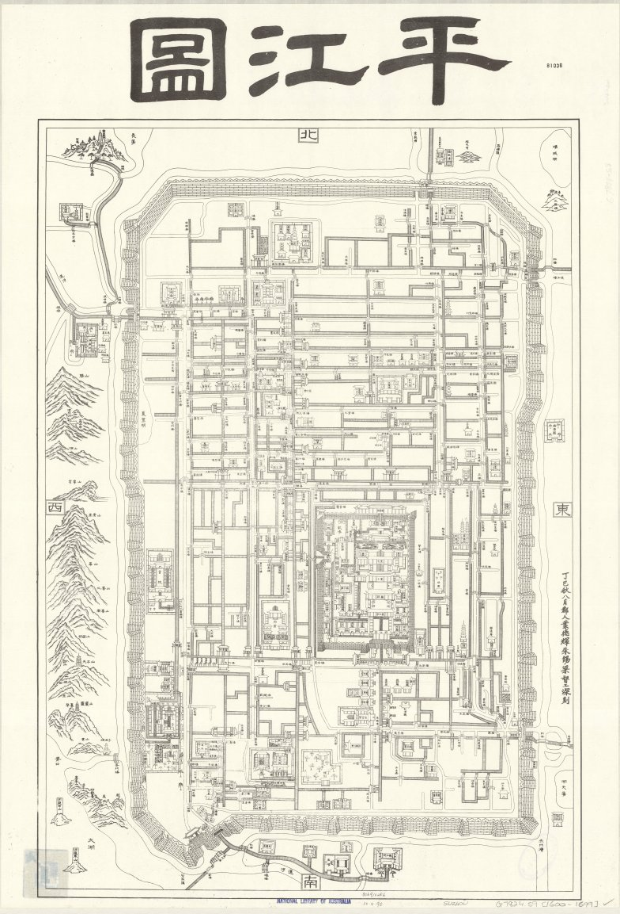

平江图
PAST & PRESENT
文化地图 →
循水寻街 · 古今相望
一座桥，两幅平江。
古今认桥
点桥名，双图联动。
加载中…
点选桥名 · 古今同游
走一遍双桥 ↱
八桥水巷 / 第 2、3 座
巷口的两座桥
关闭 ×
古 · 平江图
今 · 双桥水口
胡厢使桥
唐家桥
平江河
胡厢使河
曹胡徐巷
平江路
↑ 北
起点 · 曹胡徐巷
先从巷口走到河对岸。
向东过河 →
下一座 · 通利桥 →
再走一次 ↺
走一遍八桥 ↱
八桥水巷 / 过桥手记
切换步行地点
关闭 ×
局部今图 · © OpenStreetMap contributors
古 · 平江图
−
100%
＋
全图

高清图加载中…
拖动平移 · ＋／− 缩放 · 北朝上
今 · 平江街巷